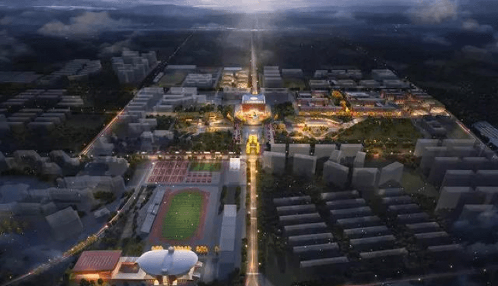
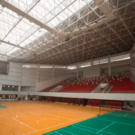
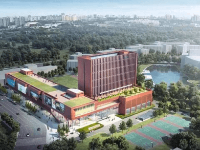
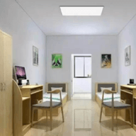
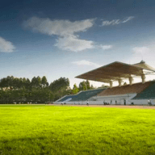

赛事场馆
东安湖体育公园
随着施工机械汽笛齐鸣，昨日上午，第31届世界大学生夏季运动会运动员村(以下简称“大运村”)建设在成都大学正式启动。
大运村新建项目包括运动员公寓、生活服务中心、医疗中心、行政保障中心、国际教育交流中心、体育馆附馆、游泳馆。等
设施场馆，还将新建中国-东盟艺术学院新院区，总面积达37.388万平方米。
两年后，来自世界各个国家和地区的运动员将在这里交流友谊、放飞梦想。大运村在世大会举办期间办赛事，世大会结束以
后用于教学。
“学校充分认同大运村‘开放、融合、绿色、智慧’和注重文化融合与集约共享的规划设计理念，前期，已经配合市委市政府完成
了大运村的申报和大运村建设改造方案编制。”成都大学校长王清远介绍，昨日，大运村建改项目进入实质实施阶段，成都大学
将举全校之力，投入到大运村的建设中，将大运村的建设与学校长远发展结合起来，协调推进各项建改任务。
记者获悉，大运村在改造已有宿舍、食堂、体育场馆的同时，还将新建生活服务中心、医疗中心、行政保障中心、国际教育交流
中心、中国-东盟艺术学院新院区等项目，新建总面积达37.388万平方米。大运村在世大会举办期间办赛事，世大会结束以后用
于教学。包括:住宿区、国际区、运营区、交通区、赛训区五个部分。
其中，住宿区将为170多个国家和地区的代表团提供不低于11000人的住宿、餐饮等服务;运营区提供代表团注册、接待服务并且
承担运动员村运行管理;国际区为各个代表团提供医疗、咨询、会议、休闲、商业等服务;交通区为运动员往来各场馆提供交通服
务;赛训区除提供赛事服务外，还提供运动员恢复性体能训练和体育娱乐等。
王清远介绍，学校将提前谋划、精心组织丰富多彩的大运村文化交流活动，为大运精神的传播贡献力量;还将提前选好志愿者,做
好校园文化各项建设。
记者从开工仪式上获悉，举办第31届世界大学生夏季运动会，是成都建设世界文化名城，打造世界赛事名城，提升国际竞争力影
响力的生动实践，将有助于进一步增强城市功能、提高运动和健康素质、提升文明素养、促进经济社会发展以及扩大国际知名度
美誉度。世大会专用通道开展前期工作星级酒店等招商促建目前，项目正在顺利推进中。如何做好建设工作?据介绍，项目将严格
按照既定时间节点和要求，组建专班、倒排工期，确保按期交付。项目还将分析大学生运动会的特点特色，以满足世大会实际需
求为出发点，以让入住嘉宾满意为落脚点，聘请体育赛事专业策划团队认真研究、深入分析，做好统筹安排，建设成为向世界展
示成都形象、展现成都魅力的高水准工程。
此外，龙泉驿区还将推进片区综合整治提升，初步编制了大运村周边整治提升方案，实施片区改造提升。该区将对标国际水准，
加快提升十陵片区规划设计和重要节点城市设计，进一步明晰和优化城市风貌、建筑色彩，形成改造提升导则;还将实施片区骨
干路网、公交首末站和专用停车场规划建设，提升城区道路通达能力。规划建设东盟艺术小镇，加快布局星级酒店等重大商服项
目，积极培育国际化的新兴消费场景，推动片区消费业态整体优化升级。
|  |  |
|  | |
|  |  |